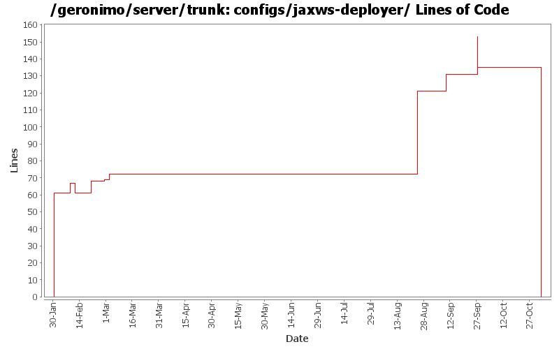

[root]/configs/jaxws-deployer
 src
(0 files, 0 lines)
src
(0 files, 0 lines)
 main
(0 files, 0 lines)
main
(0 files, 0 lines)
 plan
(0 files, 0 lines)
plan
(0 files, 0 lines)
 plan
(0 files, 0 lines)
plan
(0 files, 0 lines)

| Author | Changes | Lines of Code | Lines per Change |
|---|---|---|---|
| Totals | 18 (100.0%) | 247 (100.0%) | 13.7 |
| dims | 4 (22.2%) | 135 (54.7%) | 33.7 |
| gawor | 2 (11.1%) | 51 (20.6%) | 25.5 |
| vamsic007 | 1 (5.6%) | 25 (10.1%) | 25.0 |
| jdillon | 4 (22.2%) | 19 (7.7%) | 4.7 |
| djencks | 2 (11.1%) | 15 (6.1%) | 7.5 |
| prasad | 4 (22.2%) | 1 (0.4%) | 0.2 |
| hogstrom | 1 (5.6%) | 1 (0.4%) | 1.0 |
GERONIMO-3565. Configs distributed amongst framework/configs and plugins
0 lines of code changed in 3 files:
making cxf intergration more modular: separated ejb bits from servlet bits.
2 lines of code changed in 1 file:
GERONIMO-3481 Offline deployer throws BIND Exception when port 1099 is in use
o Change the scope of jaxws-deployer's dependency on webservices-common to runtime.
o Prevent offline deployer from stopping the onlineConfigStores as it will leave no stores for the offline deployer to work with.
25 lines of code changed in 1 file:
update some more configs to build more reasonable geronimo-plugin.xml metadata
10 lines of code changed in 1 file:
expose command line client for jaxws-tools
49 lines of code changed in 1 file:
* updated copyright date to 2007
1 lines of code changed in 1 file:
Changed trunk to 2.1-SNAPSHOT
1 lines of code changed in 1 file:
Normalize all configs/*/pom.xml headers
14 lines of code changed in 1 file:
GERONIMO-2937, GERONIMO-2934 Fix LinkageError problem running app client builder
5 lines of code changed in 1 file:
Std props
dos2unix on some files with inconsistent newlines
4 lines of code changed in 1 file:
More legal muck... *head explodes*
1 lines of code changed in 2 files:
GERONIMO-2849 - service-ref app client test
GERONIMO-2850 - CXF: initial web service support for EJBs
7 lines of code changed in 1 file:
- Ability to specify the ws impl from a system property, example:
-Djavax.xml.ws.spi.Provider=org.apache.axis2.jaxws.spi.Provider
- Default is CXF as per last email from Jarek. So if the system property
is absent, then the first deployer will kick in (which is cxf)
- Ran into a class loader issue because wsdl4j is loaded by multiple
class loaders, so move it into webservices-common config.
0 lines of code changed in 1 file:
Fix for GERONIMO-2807 - CXF: initial service-ref support
67 lines of code changed in 1 file:
Many Many Thanks to DJencks! - Got this working finally. All the tests in webservices-testsuite pass
61 lines of code changed in 1 file: